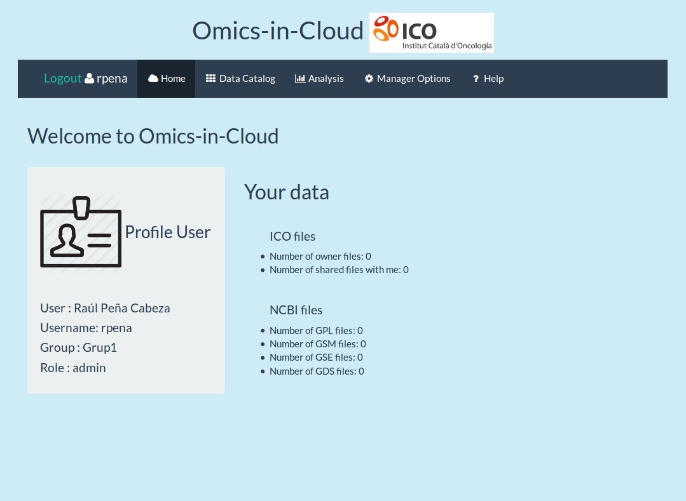
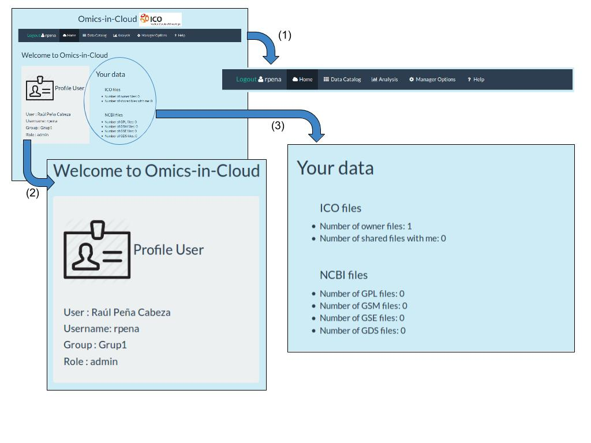

Home aplicación
Una vez el usuario ha sido validado se llega a la página principal de la aplicación.

Esta página está dividida en tres partes:
- Barra de navegación de la aplicación.
- Perfil del usuario validado. Indica los datos del usuario validado, incluyendo el grupo de investigación al que pertenece y el rol dentro de la aplicación.
- Información de los datos accesibles por el usuario en la aplicación. Se muestra información del número de ficheros a los que tiene acceso el usuario, distinguiendo entre ficheros del ICO y ficheros de NCBI. Dentro de los ficheros NCBI se distinguen entre los tipos de ficheros que puede haber, y dentro de los ficheros ICO se distingue entre ficheros propios del grupo de investigación del usuario y ficheros que otros grupos de investigación han compartido con el grupo del usuario validado.
